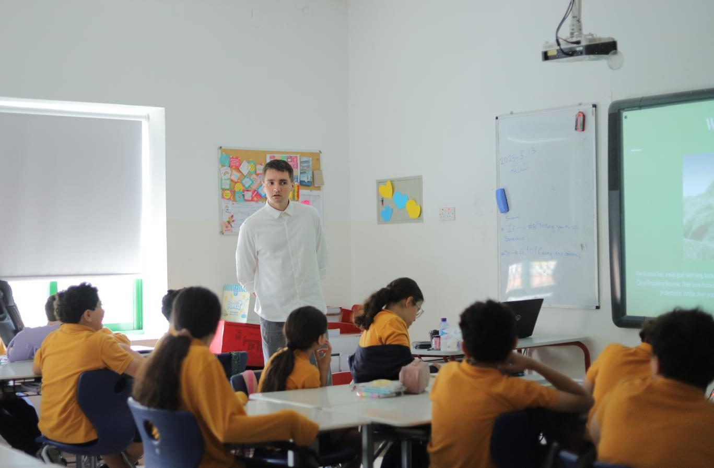
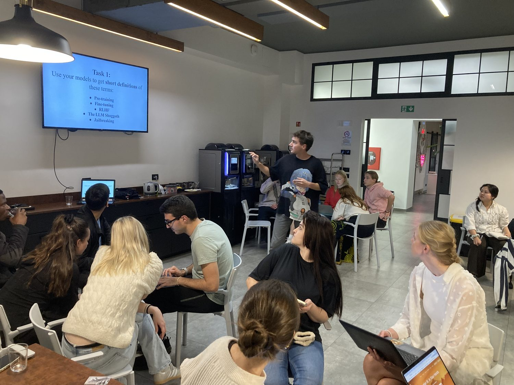
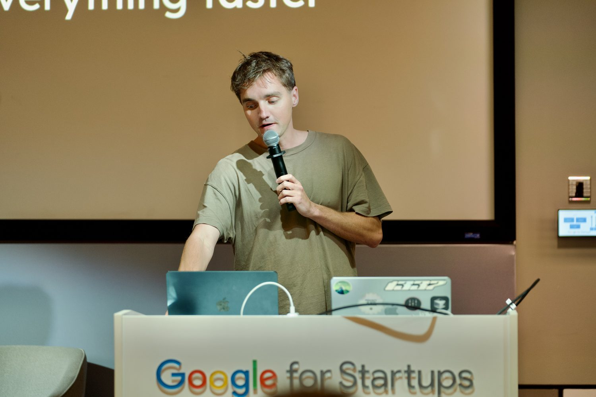
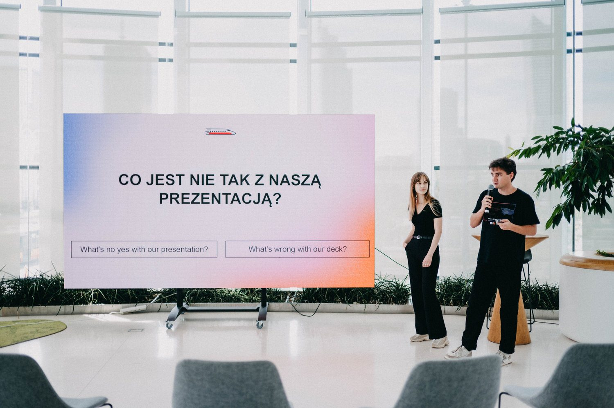
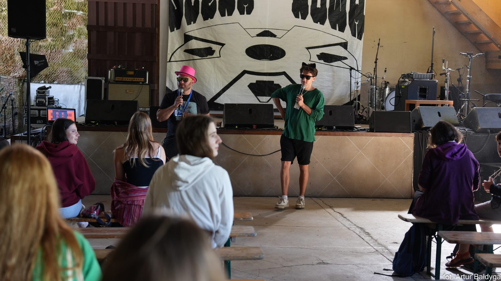
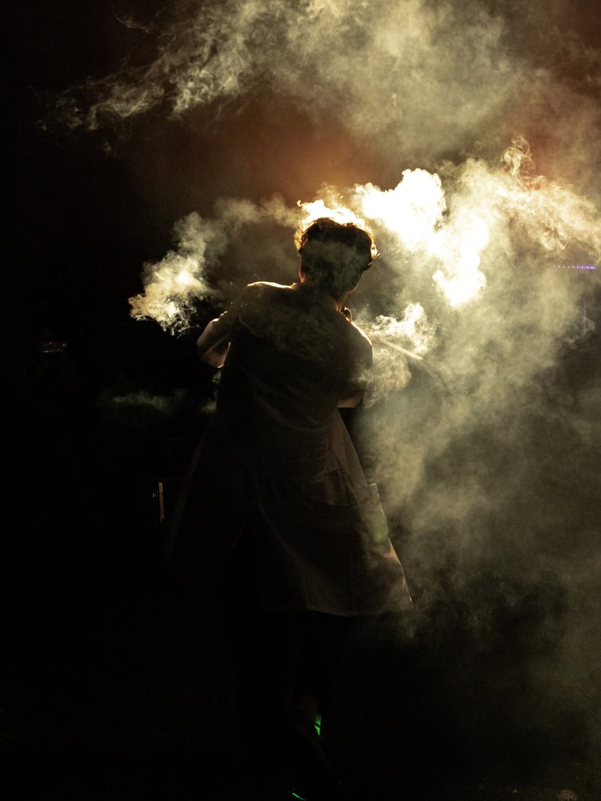

Lessons that will get you talking
How my lessons work
I ask you a few good questions and listen closely to your answers. I note what’s worth fixing, we work on it together, then go back to the conversation to see the difference.
No textbooks: films, music, tweets, essays. My first goal is to find a strong purpose for your English, and build the lessons around it.
I love teaching more advanced topics too, from Business English and specialist language to pronunciation and advanced grammar.
Want to learn more? Read how I teach in 2026.
What I teach
- Speaking
- conversation, pronunciation, slang, and registers
- Exams
- Polish 8th-grade exam (ósmoklasisty), matura (extended), Cambridge (CPE, CAE, FCE, PET)
- Work
- Business English, specialist language, negotiations, IT
- Grammar
- from basics to C2+
About me
I’ve taught English for 11 years. I hold CPE and CELTA, both with grade A, and studied applied linguistics at the University of Warsaw.
I'm a juggler and founder. I've used English in business, on stage, in negotiations, and on the road. I used to be a pretty shy kid myself, so I know how the language barrier feels.
My favourite moments are when a student who used to avoid conversations starts seeking them out.
I breathe the language every day: I tweet, read research, create, work, and explore in English. You'll be learning the authentic language of today.
Reviews
-
That was my first lesson with Chris and I’m happy. I recommend!
Błażej · stayed for 230 lessons -
Great teacher. Very helpful for beginners. Friendly atmosphere. I recommend!
Natalia · fell in love with English in 4 lessons -
Really pleasant teaching. Chris explains very well and delivers the lessons really well. Great classes, a lot of determination and help in achieving results.
Mateusz · prepared for a job interview in 16 lessons -
I have classes with Krzysztof over a year and I highly recommend him as a teacher and ENG/PL consultant. What a progress!
Piotr · daily lessons before America’s Got Talent -
The perfect approach to lessons ;)
Magdalena · prepared to manage an international team in 135 lessons
Experience
- 11 yearsEnglish teacherBusiness English, advanced conversation, grammar, and exam prep, all levels up to C2+. Taught in schools, directly, and through Langu, FluentBe, Blackbird Group, and Engrono, including for clients like AstraZeneca.
- 9 yearsTranslator and interpreterBooks, websites, and scripts, plus interpreting for business negotiations.
- 2 yearsFounder at LearntrainBuilt the app, set up the company (sp. z o.o.), went through two accelerators, raised grant funding, and ran pitches and interviews.

volunteering to teach in Jordan 
conducting a workshop on AI in Italy 
presenting at a hackathon by AI Engine 
pitching our startup in Rotunda PKO 
hosting an event at Slot Art Festival working as a performer in Dubai performing at a circus festival 
dancing with fire